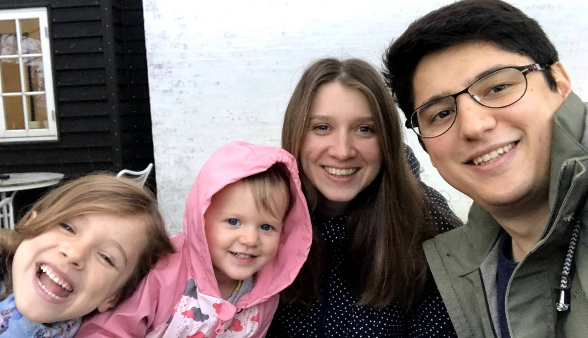

Welcome to my website!
I am a demographer.
This site gives an overview of my academic activities.
I am a Senior Researcher at Statistics Denmark.
Until recently I was an Assistant Professor at the Interdisciplinary Centre on Population Dynamics, University of Southern Denmark, Odense, Denmark.
I did my PhD project at the University of Groningen and Netherlands Interdisciplinary Demographic Institute with the scientific supervision by Leo van Wissen and Joop de Beer. The focus of the thesis is on regional variations in aging across Europe, the demographic processes shaping them, their dynamics and possible implications for economies and societies. My interests include most topics relating to demography, population geography, spatial analysis and data visualization.
I am an avid R user with deep interest in GIS, spatial analysis, and efficient data visualization, which I teach often and with great pleasure. I am happy that my blog is included in the brilliant R-bloggers project.
My main interest is demography. For three years, 2015–2017, I was systematically following the state-of-the-art research in the field and writing brief summaries (in Russian) of selected demographic papers in my Demographic Digest.
BIO
I was born in Israel, grew up in Moscow, during my PhD years lived in The Hague, and now live in Odense. Married and have two daughters. I got a bachelors in geography from Moscow State University in 2012, masters in demography from the National Research University Higher School of Economics (Moscow) in 2014, and PhD from University of Groningen in 2020.

Feel free to contact me via email
ilya.kashnitsky at gmail dot com
Ilya